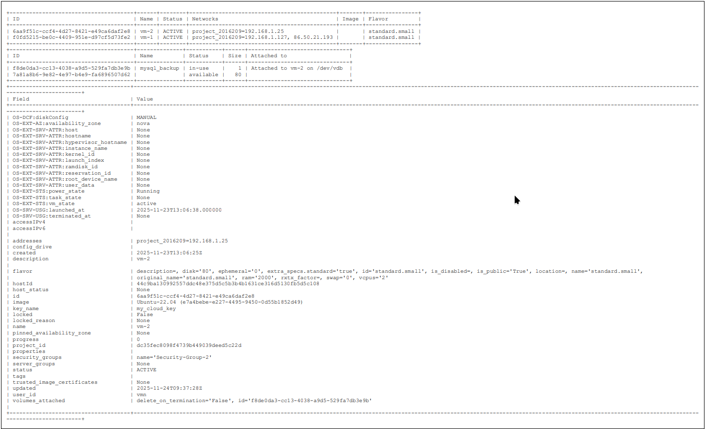

🏗 Architecture Overview
The infrastructure utilizes Ubuntu 22.04 VMs within the OpenStack environment:
- Web Server (VM1): Runs Nginx and PHP-FPM. Connected to both public and private networks.
- Database Server (VM2): Hosts the MySQL instance. Isolated on a private-only network for security.
- Persistent Volume: OpenStack block storage attached to VM2 to ensure data survives server failure.
- Security Groups: Strict ingress rules (Port 22 for SSH, 80/443 for Web, and 3306 restricted to internal IPs).
🧰 Technologies Used
OpenStack
Nginx
PHP-FPM
MySQL
WordPress
SSL/TLS
Block Storage
🌐 Production Deployment & Security
WordPress Configuration
- Optimized PHP-FPM socket communication for high performance.
- Hardened MySQL using
mysql_secure_installation and role-based access control.
- Deployed self-signed SSL certificates to enable HTTPS-only traffic.
Security Verification
HTTP/1.1 200 OK
Server: nginx/1.18.0 (Ubuntu)
Date: Thu, 20 Nov 2025 19:31:13 GMT
Content-Type: text/html; charset=UTF-8
Connection: keep-alive
Link: ; rel="https://api.w.org/"
🚨 Disaster Recovery Scenario
The Incident: A critical failure occurred where the MySQL database was accidentally destroyed, rendering the WordPress site unavailable (Error establishing a database connection).
The Recovery Process
Instead of a full redeployment, a surgical restoration was performed:
- Volume Attachment: Re-attached the existing persistent block storage volume to the Database VM.
- Mounting: Configured
/etc/fstab to mount the volume to the MySQL data directory.
- SQL Correction: Used direct SQL queries to update
siteurl and home values to match the restored environment.
- Validation: Verified data integrity and ensured all WordPress posts and media were intact.
